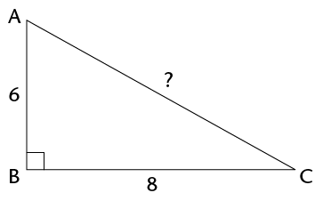
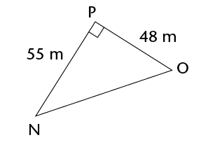
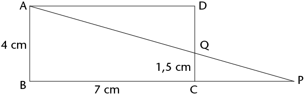

<div class="container">
  <div id="contents" class="col-md-12 main-content"><h1 xmlns="http://www.w3.org/1999/xhtml" id="toc-id-0">Pythagoras' theorem</h1>

<b xmlns="http://www.w3.org/1999/xhtml">theorem</b>
    is a rule or a statement that has been proved through
    reasoning. Pythagoras' Theorem is a rule that applies only to
    <b xmlns="http://www.w3.org/1999/xhtml">right-angled triangles</b>. The theorem is named after the
    Greek mathematician, Pythagoras.<b xmlns="http://www.w3.org/1999/xhtml">hypotenuse</b>.<h4 xmlns="http://www.w3.org/1999/xhtml">Pythagoras (569-475 BC)</h4>
<p xmlns="http://www.w3.org/1999/xhtml" class="Body-content-no-indent"> Pythagoras was an influential mathematician. like many Greek mathematicians of 2500 years ago, he was also a philosopher and a scientist. He formulated the best known theorem, today known as Pythagoras' Theorem. However, the theorem had already been in use 1000 years earlier, by the Chinese and Babylonians.</p>
<span xmlns="http://www.w3.org/1999/xhtml"></span> <p xmlns="http://www.w3.org/1999/xhtml" class="Body-content-no-indent">The <b>hypotenuse</b> is
      the side opposite the 90\(^\circ\) angle in a right-angled
      triangle. It is always the longest side.</p>
    <p xmlns="http://www.w3.org/1999/xhtml" class="Head-box"><b>How to say it:</b></p>

      <p xmlns="http://www.w3.org/1999/xhtml" class="Body-box-no-indent">'high -
      <span class="char-style-override-9">pot</span> - eh -
      news'</p>
    <li xmlns="http://www.w3.org/1999/xhtml" class="Body-investigation">The figure shows a
    right-angled triangle with squares on each of the sides.

    <div class="frame-35"></div>
<ol>
    <li class="ques-a--2-space-below">Write down the areas of
    the following:

    <p class="ques-a--2-space-below">Square A:</p>
    <hr/>

    <p class="ques-a--2-space-below">Square B:</p>
    <hr/>

    <p class="ques-a--2-space-below">Square C:</p>
    <hr/>
</li>
    <li class="ques-a-">Add Area of square B + Area of square
    C: <hr/></li>
   

    <li class="ques-a-">What do you notice about the areas?   <hr/></li>
 
   </ol></li>

    <li xmlns="http://www.w3.org/1999/xhtml" class="Body-investigation-hanging">The figure below is
    similar to the one in question 1. The lengths of the sides of
    the right-angled triangle are 5 cm and 12 cm. <div class="frame-35"></div>
<ol>
    <li class="ques-a-">What is the length of the hypotenuse?
    Count the squares. <hr/></li>
   

    <li class="ques-a-">Use the squares to find the
    following:
   

    <p class="ques-a-">Area of A:</p>
    <hr/>

    <p class="ques-a-">Area of B:</p>
    <hr/>

    <p class="ques-a-">Area of C:</p>
    <hr/>

    <p class="ques-a-">Area of B + Area of C:</p>
    <hr/></li>


    <li class="ques-a-">What do you notice about the areas? Is
    it similar to your answer in 1(c)?<hr/></li>
    
  </ol></li>

    <li xmlns="http://www.w3.org/1999/xhtml" class="Body-investigation-hanging">A right-angled
    triangle has side lengths of 8 cm and 15 cm. Use your findings
    in the previous questions to answer the following
    questions:<div class="frame-35"></div>
<ol>

   

    <li class="ques-a-">What is the area of the square drawn
    along the hypotenuse?<hr/> </li>
    
    
    <li class="ques-a-">What is the length of the triangle's
    hypotenuse? <hr/>  <p class="Body-no-indent">In the previous activity, you
should
    have discovered Pythagoras' Theorem for right-angled
    triangles.</p><div class="note">
      <p class="Body-content-no-indent"><b>Pythagoras' Theorem</b>
      says:</p>

      <p class="Body-content-no-indent">In a right-angled triangle,
      a square formed on the hypotenuse will have the same area as
      the sum of the area of the two squares formed on the other
      sides of the triangle. Therefore:</p><p>\((\text{Hypotenuse})^2 =
(\text{Side 1} )^2 + (\text{Side 2})^2\)</p>
 <div class="frame-35"></div>
    </div></li>
    

</ol>
 </li>
<li xmlns="http://www.w3.org/1999/xhtml" class="Body-bullet"> If a
      triangle is right-angled, the sides will have the following
      relationship: \(\text{(Hypotenuse)}^{2}\) = \(\text{(Side 1)}^{2}\) + \(\text{(Side 2)}^{2}\)
</li>
      <li xmlns="http://www.w3.org/1999/xhtml" class="Body-bullet"> If the
      sides have the relationship: \(\text{(Longest side)}^{2}\) = \(\text{(Side 1)}^{2}\) + \(\text{(Side 2)}^{2}\), then the triangle is a
      right-angled triangle.</li>
    <b xmlns="http://www.w3.org/1999/xhtml">Example:</b><span xmlns="http://www.w3.org/1999/xhtml"></span> <li xmlns="http://www.w3.org/1999/xhtml" class="Body-investigation-hanging">This triangle's side
    lengths are 29 mm, 20 mm and 21 mm. Prove that it is a
    right-angled triangle.
    <div class="frame-35"></div>
    <hr/></li>

  

    <li xmlns="http://www.w3.org/1999/xhtml" class="Body-investigation-hanging">Use Pythagoras'
    Theorem to determine whether these triangles are right-angled.
    All values are in the same units.


<ol>    

<li class="Body-no-indent para-style-override-26"><span></span> <hr/></li>


<li class="Body-no-indent para-style-override-26"><span></span> <hr/></li>

<li class="Body-no-indent para-style-override-26"><span></span> <hr/>
</li>


</ol></li>

    <li xmlns="http://www.w3.org/1999/xhtml" class="Body-investigation-hanging">Determine whether the
    following side lengths would form right-angled triangles. All
    values are in the same units.
<ol>

    <li class="ques-a--3-columns">7, 9 and 12<hr/></li>
<li class="ques-a--3-columns">7, 12 and 14<hr/></li>
<li class="ques-a--3-columns">16, 8 and 10<hr/></li>
<li class="ques-a--3-columns">6, 8 and 10<hr/></li>
<li class="ques-a--3-columns">8, 15 and 17<hr/></li>
<li class="ques-a--3-columns">16, 21 and 25<hr/></li>


</ol></li>
<b xmlns="http://www.w3.org/1999/xhtml">Example:</b><b xmlns="http://www.w3.org/1999/xhtml">surd</b>.<p xmlns="http://www.w3.org/1999/xhtml" class="Head-box"><b>Surd form</b></p>

      <p xmlns="http://www.w3.org/1999/xhtml" class="Body-box-no-indent">You pronounce <span class="char-style-override-9">surd</span> so that it rhymes with
      <span class="char-style-override-9">word</span>.</p>

      <p xmlns="http://www.w3.org/1999/xhtml" class="Body-box">\(\sqrt{5}\) is an example of a number in surd
      form.</p>

      <p xmlns="http://www.w3.org/1999/xhtml" class="Body-box">\(\sqrt{9}\) is not a surd because you can
      simplify it:</p>

      <p xmlns="http://www.w3.org/1999/xhtml" class="Body-box">\(\sqrt{9}\) = 3</p>
    <b xmlns="http://www.w3.org/1999/xhtml">Example:</b><li xmlns="http://www.w3.org/1999/xhtml" class="Body-investigation-hanging">Find the length of the
    hypotenuse in each of the triangles below. Leave the answers in
    surd form where applicable.
<ol>

<li class="Body-no-indent para-style-override-26"><span></span> <hr/></li> <li class="Body-no-indent para-style-override-26"><span></span>  <hr/></li> <li class="Body-no-indent para-style-override-26"><span></span> <hr/></li> <li class="Body-no-indent para-style-override-26"><span></span> <hr/></li>

</ol></li>

    <li xmlns="http://www.w3.org/1999/xhtml" class="Body-investigation-hanging">A rectangle has sides
    with lengths 36 mm and 77 mm. Find the length of the
    rectangle's diagonal.
    <div class="frame-35"></div>
    <hr/></li>

   
    <li xmlns="http://www.w3.org/1999/xhtml" class="Body-investigation-hanging">\(\triangle\)ABC has \(\hat{A}\) = 90\(^\circ\), AB = 3 cm and AC = 5
    cm. Make a rough sketch of the triangle, and then calculate the
    length of BC. <hr/></li>
   
   

    <li xmlns="http://www.w3.org/1999/xhtml" class="Body-investigation-hanging">A rectangular prism is
    made of glass. It has a length of 16 cm, a height of 10 cm and
    a breadth of 8 cm. ABCD and EFGH are two of its faces.
    \(\triangle\)ACH has been drawn inside the prism. Is \(\triangle\)ACH
    right-angled? Answer the questions to find out.

    <p class="ques-a-"><span></span> </p>
<ol>
    <li class="ques-a-">Calculate the length of the sides of
    \(\triangle\)ACH. Note that all three sides of the triangles are
    diagonals of rectangles. AC is in rectangle ABCD, AH is in ADHE
    and HC is in HDCG. <hr/></li>
   
  
    <li class="ques-a-">Is \(\triangle\)ACH right-angled? Explain
    your answer. <hr/>
   
</li>
</ol>
</li>
<b xmlns="http://www.w3.org/1999/xhtml">Example:</b><li xmlns="http://www.w3.org/1999/xhtml" class="Body-investigation-hanging">In the right-angled
    triangles below, calculate the length of the sides that have
    not been given. Leave your answers in surd form where
    applicable.
<ol>
  
<li class="Body-no-indent para-style-override-26"><span></span> <hr/></li>


<li class="Body-no-indent para-style-override-26"><span></span> <hr/></li>


<li class="Body-no-indent para-style-override-26"><span></span> <hr/></li>

</ol>
 </li>
    <li xmlns="http://www.w3.org/1999/xhtml" class="Body-investigation-hanging">Calculate the length
    of the third side of each of the following right-angled
    triangles. First draw a rough sketch of each of the triangles
    before you do any calculations. Round off your answers to two
    decimal places.
<ol>
    <li class="ques-a-">\(\triangle\)ABC has AB = 12 cm, BC = 18 cm
    and \(\hat{A}\) = 90\(^\circ\). Calculate AC.
    <hr/></li>
  
    <li class="ques-a-">\(\triangle\)DEF has \(\hat{F}\)= 90\(^\circ\), DE = 58 cm and DF = 41
    cm. Calculate EF. <hr/></li>
   
  
    <li class="ques-a-">\(\triangle\)JKL has \(\hat{K}\) = 90\(^\circ\), JK = 119 m, KL = 167 m.
    Calculate JL.<hr/></li>
    
  
    <li class="ques-a-"><span class="char-style-override-26">\(\triangle\)</span>PQR has PQ = 2 cm, QR
    = 8 cm and \(\hat{Q}\) = 90\(^\circ\). Calculate PR.<hr/></li>
    
  
</ol>
</li>
    <li xmlns="http://www.w3.org/1999/xhtml" class="ques-a-">
<ol>
    <li>A ladder of length 5 m is placed at
    an angle against a wall. The bottom of the ladder is 1 m away
    from the wall. How far up the wall will the ladder reach? Round
    off to two decimal places.

    <div class="frame-35"></div>
    <hr/></li>
   
    <li class="ques-a-">If the ladder reaches a height of 4,5 m
    against the wall, how far away from the wall was it placed?
    Round off to two decimal places.<hr/></li>

</ol>
</li>
<p xmlns="http://www.w3.org/1999/xhtml" class="Body-box-no-indent para-style-override-5">
            Sets of <b>whole numbers</b> that can be used as the
            sides of a right-angled triangle are known as
            <b>Pythagorean triples</b>, for example:</p>

            <p xmlns="http://www.w3.org/1999/xhtml" class="Body-box-no-indent para-style-override-5">
            3-4-5 ;5-12-13 ;7-24-25 ;16-30-34 ;20-21-29</p>

            <p xmlns="http://www.w3.org/1999/xhtml" class="Body-box-no-indent para-style-override-5">You
            extend these triples by finding multiples of them. For
            examples, triples from the 3-4-5 set include the
            following:</p>

            <p xmlns="http://www.w3.org/1999/xhtml" class="Body-box-no-indent para-style-override-5">
            3-4-5 ;6-8-10 ;9-12-15 ;12-16-20</p>

            <p xmlns="http://www.w3.org/1999/xhtml" class="Body-box-no-indent para-style-override-5">
            There are many old writings that record Pythagorean
            triples. For example, from 1900 to 1600 BC the
            Babylonians had already calculated very large
            Pythagorean triples, such as:</p>

            <p xmlns="http://www.w3.org/1999/xhtml" class="Body-box-no-indent para-style-override-5">1
            679-2 400-2 929.</p>

            <p xmlns="http://www.w3.org/1999/xhtml" class="Body-box-no-indent">How many Pythagorean
            triples can you find? What is the largest one you can
            find that is not a multiple of another one?</p>
      <li xmlns="http://www.w3.org/1999/xhtml" class="Body-investigation-hanging">Four lines have been
    drawn on the grid below. Each square is 1 unit long. Calculate
    the lengths of the lines: AB, CD, EF and GH. Do the
    calculations in your exercise book and write the answers below.
    Leave your answers in surd form.

    <p class="Body-no-indent"><span></span> </p></li>

    <li xmlns="http://www.w3.org/1999/xhtml" class="ques-a-">
<ol>
<li> Calculate the area of rectangle
    KLMN.

    <div class="frame-35"></div>
    <hr/></li>

    <li class="ques-a-">Calculate the perimeter of
    \(\triangle\)KLM.  <hr/></li>

 

</ol> </li>
    <li xmlns="http://www.w3.org/1999/xhtml" class="Body-investigation-hanging">ABCD is a rectangle
    with AB = 4 cm, BC = 7 cm and CQ = 1,5 cm. Round off your
    answers to two decimal places if the answers are not whole
    numbers.

    <p class="Body-no-indent"><span></span> </p>

<ol>
    <li class="ques-a-">What is the length of QD?  <hr/></li>
  

    <li class="ques-a-">If CP = 4,2 cm, calculate the length of
    PQ. <hr/></li>
   

    <li class="ques-a-">Calculate the length of AQ and the area
    of \(\triangle\)AQD.<hr/></li>
    

</ol>
</li>
    <li xmlns="http://www.w3.org/1999/xhtml" class="Body-investigation-hanging">MNST is a
    parallelogram. NR = 9 mm and MR = 12 mm.

    <div class="frame-35"></div>
<ol>
    <li class="ques-a-">Calculate the area of \(\triangle\)MNR. <hr/></li>
   

    <li class="ques-a-">Calculate the perimeter of MNST.    <hr/></li>

  
</ol></li>
<p xmlns="http://www.w3.org/1999/xhtml" class="Body-box-no-indent">Pythagoras' Theorem works
            only for right-angled triangles. But we can also use it
            to find out whether other triangles are acute or
            obtuse, as follows.</p>

            <ul xmlns="http://www.w3.org/1999/xhtml">
              <li class="Body-box-bullets">
              <b>If the square of
              the longest side is   less than the sum of the squares
              of the two shorter sides, the biggest angle is
              acute</b> . </li>
            </ul>

            <p xmlns="http://www.w3.org/1999/xhtml" class="Body-box-no-indent para-style-override-25">
            For example, in a 6-8-9 triangle: \(6^{2}\) + \(8^{2}\) = 100 and
            \(9^{2}\) =
            81.</p>

            <p xmlns="http://www.w3.org/1999/xhtml" class="Body-box-no-indent para-style-override-25">81
            is less than 100 \(\therefore\) the
            6-8-9 triangle is acute.</p>

            <ul xmlns="http://www.w3.org/1999/xhtml">
              <li class="Body-box-bullets">
              <b>If the square of
              the longest side is more than the sum of the squares
              of the two shorter sides, the biggest angle is
              obtuse</b> . </li>
            </ul>

            <p xmlns="http://www.w3.org/1999/xhtml" class="Body-box-no-indent para-style-override-25">
            For example, in a 6-8-11 triangle: \(6^{2}\) + \(8^{2}\) = 100 and
            \(11^{2}\) =
            121.</p>

            <p xmlns="http://www.w3.org/1999/xhtml" class="Body-box-no-indent para-style-override-25">
            121 is more than 100 \(\therefore\) the
            6-8-11 triangle is obtuse.</p>

            <div xmlns="http://www.w3.org/1999/xhtml" class="frame-35"></div>

            <p xmlns="http://www.w3.org/1999/xhtml" class="Body-box-no-indent para-style-override-18">
            Complete the following table. It is based on the
            triangle on the right. Decide whether each triangle
            described is right-angled, acute or obtuse.</p>

            <table xmlns="http://www.w3.org/1999/xhtml" id="table-50" class="No-Table-Style">
              <colgroup>
                <col class="Row-Column-299"/>
                <col class="Row-Column-299"/>
                <col class="Row-Column-299"/>
                <col class="Row-Column-135"/>
                <col class="Row-Column-41"/>
                <col class="Row-Column-300"/>
                <col class="Row-Column-301"/>
              </colgroup>

              <tbody>
                <tr class="Row-Column-102">
                  <td>
                    <p class="Table-header-centred">\(a\)</p>
                  </td>

                  <td>
                    <p class="Table-header-centred">\(b\)</p>
                  </td>

                  <td>
                    <p class="Table-header-centred">\(c\)</p>
                  </td>

                  <td>
                    <p class="Table-header-centred">\(a^{2} + b^{2}\)</p>
                  </td>

                  <td>
                    <p class="Table-header-centred">\(c^{2}\)</p>
                  </td>

                  <td>
                    <p class="Table-header-centred">Fill ini =, &gt; or
                    &lt;</p>
                  </td>

                  <td class="cell-style-override-20">
                    <p class="Table-header-centred">Type of
                    triangle</p>
                  </td>
                </tr>

                <tr class="Row-Column-44">
                  <td class="cell-style-override-21">
                    <p class="Body-box-no-indent para-style-override-22">
                    3</p>
                  </td>

                  <td class="cell-style-override-21">
                    <p class="Body-box-no-indent para-style-override-22">
                    5</p>
                  </td>

                  <td class="cell-style-override-21">
                    <p class="Body-box-no-indent para-style-override-22">
                    6</p>
                  </td>

                  <td class="cell-style-override-21">
                    <p class="Body-box-no-indent">\(3^{2} + 5^{2}
                    = 9 + 25 = 34\)</p>
                  </td>

                  <td class="cell-style-override-21">
                    <p class="Body-box-no-indent para-style-override-22">\(6^{2}\) 
                    = 36</p>
                  </td>

                  <td class="cell-style-override-21">
                    <p class="Body-box-no-indent">\(a^{2} + b^{2} \gt c^{2}\)</p>
                  </td>

                  <td class="cell-style-override-21">
                    <p class="Body-box-no-indent">Acute</p>
                  </td>
                </tr>

                <tr class="Row-Column-44">
                  <td class="cell-style-override-21">
                    <p class="Body-box-no-indent para-style-override-22">
                    2</p>
                  </td>

                  <td class="cell-style-override-21">
                    <p class="Body-box-no-indent para-style-override-22">
                    4</p>
                  </td>

                  <td class="cell-style-override-21">
                    <p class="Body-box-no-indent para-style-override-22">
                    6</p>
                  </td>

                  <td class="cell-style-override-21"/>

                  <td class="cell-style-override-21"/>

                  <td class="cell-style-override-22">
                    <p class="Body-box-no-indent">\(a^{2} + b^{2}\) ........... \(c^{2}\)</p>
                  </td>

                  <td class="cell-style-override-21"/>
                </tr>

                <tr class="Row-Column-44">
                  <td class="cell-style-override-21">
                    <p class="Body-box-no-indent para-style-override-22">
                    5</p>
                  </td>

                  <td class="cell-style-override-21">
                    <p class="Body-box-no-indent para-style-override-22">
                    7</p>
                  </td>

                  <td class="cell-style-override-21">
                    <p class="Body-box-no-indent para-style-override-22">
                    9</p>
                  </td>

                  <td class="cell-style-override-21"/>

                  <td class="cell-style-override-21"/>

                  <td class="cell-style-override-22">
                   <p class="Body-box-no-indent">\(a^{2} + b^{2}\) ...........
\(c^{2}\)</p>
                  </td>

                  <td class="cell-style-override-21"/>
                </tr>

                <tr class="Row-Column-44">
                  <td class="cell-style-override-21">
                    <p class="Body-box-no-indent para-style-override-22">
                    12</p>
                  </td>

                  <td class="cell-style-override-21">
                    <p class="Body-box-no-indent para-style-override-22">
                    5</p>
                  </td>

                  <td class="cell-style-override-21">
                    <p class="Body-box-no-indent para-style-override-22">
                    13</p>
                  </td>

                  <td class="cell-style-override-21"/>

                  <td class="cell-style-override-21"/>

                  <td class="cell-style-override-22">
                  <p class="Body-box-no-indent">\(a^{2} + b^{2}\) ........... \(c^{2}\)</p>
                  </td>

                  <td class="cell-style-override-21"/>
                </tr>

                <tr class="Row-Column-44">
                  <td class="cell-style-override-21">
                    <p class="Body-box-no-indent para-style-override-22">
                    12</p>
                  </td>

                  <td class="cell-style-override-21">
                    <p class="Body-box-no-indent para-style-override-22">
                    16</p>
                  </td>

                  <td class="cell-style-override-21">
                    <p class="Body-box-no-indent para-style-override-22">
                    20</p>
                  </td>

                  <td class="cell-style-override-21">
                    <p class="Body-box-no-indent">\(12^{2} + 16^{2}
                    = 144 + 256 = 400\)</p>
                  </td>

                  <td class="cell-style-override-21">
                    <p class="Body-box-no-indent para-style-override-22">
                    \(20^{2}                    = 400\)</p>
                  </td>

                  <td class="cell-style-override-21">
                    <p class="Body-box-no-indent">\(a^{2} + b^{2}\) ...........
\(c^{2}\)</p>
                  </td>

                  <td class="cell-style-override-21">
                    <p class="Body-box-no-indent">Right-angled</p>
                  </td>
                </tr>

                <tr class="Row-Column-44">
                  <td class="cell-style-override-21">
                    <p class="Body-box-no-indent para-style-override-22">
                    7</p>
                  </td>

                  <td class="cell-style-override-21">
                    <p class="Body-box-no-indent para-style-override-22">
                    9</p>
                  </td>

                  <td class="cell-style-override-21">
                    <p class="Body-box-no-indent para-style-override-22">
                    11</p>
                  </td>

                  <td class="cell-style-override-21"/>

                  <td class="cell-style-override-21"/>

                  <td class="cell-style-override-22">
                    <p class="Body-box-no-indent">\(\text{a}^{2}\) +
\(\text{b}^{2}\) ........... \(\text{c}^{2}\)</p>
                  </td>

                  <td class="cell-style-override-21"/>
                </tr>

                <tr class="Row-Column-44">
                  <td class="cell-style-override-21">
                    <p class="Body-box-no-indent para-style-override-22">
                    8</p>
                  </td>

                  <td class="cell-style-override-21">
                    <p class="Body-box-no-indent para-style-override-22">
                    12</p>
                  </td>

                  <td class="cell-style-override-21">
                    <p class="Body-box-no-indent para-style-override-22">
                    13</p>
                  </td>

                  <td class="cell-style-override-21"/>

                  <td class="cell-style-override-21"/>

                  <td class="cell-style-override-22">
                    <p class="Body-box-no-indent">\(\text{a}^{2}\) +
\(\text{b}^{2}\) ........... \(\text{c}^{2}\)</p>
                  </td>

                  <td class="cell-style-override-21"/>
                </tr>
            
      </tbody>
    </table>
    <ol xmlns="http://www.w3.org/1999/xhtml">
    <li class="worksheet-text para-style-override-13"><a id="Anchor"/>Write down Pythagoras' Theorem in the way that
    you best understand it.<hr/></li>
    

    <li class="worksheet-text"> Calculate the lengths of the
    missing sides in the following triangles. Leave the answers in
    surd form if necessary.
 <ol>   
    <li class="worksheet-text-2-column">

    
      <div class="frame-35"></div><hr/></li>
<li>
      <div class="frame-35"></div>
    <hr/></li>

</ol></li>
    <li class="worksheet-text">ABCD is a parallelogram.
<ol>
    <li class="worksheet-text">Calculate the perimeter of
    ABCD.

    <div class="frame-35"></div>
    <hr/></li>

    <li class="worksheet-text">Calculate the area of ABCD. 
    <hr/>
</li>
</ol></li>
</ol>
  
  </div>
</div>